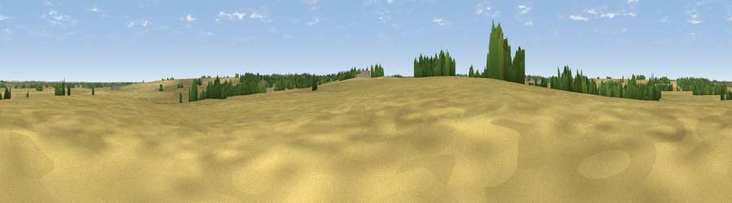

Viewpoint near Papworth St Agnes
#45453 in England · top 88% of its area beats it · near Papworth St AgnesThe view, rendered

A 360° render of this exact spot computed from the terrain model, tree cover and land cover — summer colours, afternoon light, calibrated against photographs of famous viewpoints. Real trees, hedges and buildings will differ in detail.
The panorama
Grey silhouette: terrain skyline in each direction (720 bearings, Earth curvature and refraction included). Dashed green: skyline with trees (+15 m) and buildings (+8 m) as obstacles. Blue strip: how far the ground is visible on each bearing.
Where the view opens
Wedge length = distance to the farthest visible ground on that bearing (vegetation-aware). Rings at 10, 25 and 50 km.
What fills the view
83% cropland · 8% woodland · 7% grassland · 2% built-up
Angular shares of the visible panorama (visual magnitude), not map area. Landscape diversity 0.27 (0–1 Shannon).
Key numbers
More beautiful places nearby
The staircase of upgrades: each row has a higher view potential than everything closer. Driving times are estimates from straight-line distance, calibrated against real road routing — check an actual route before setting out.
| Place | Direction | Drive | Score |
|---|---|---|---|
| Crow Hill | SE · 7 km | ~14 min | 34.5 |
| Viewpoint near Brampton | NW · 8 km | ~16 min | 35.9 |
| Viewpoint near Wimpole | SSE · 14 km | ~25 min | 40.3 |
| Viewpoint near Coton | ESE · 15 km | ~27 min | 41.8 |
| Croydon Hill | S · 15 km | ~27 min | 42.7 |
| Orwell Hill | SE · 16 km | ~28 min | 43.0 |
| Viewpoint near Orwell | SSE · 16 km | ~29 min | 45.6 |
| Viewpoint near Harlton | SE · 17 km | ~30 min | 49.6 |
52.26261, -0.13458 · source: osm viewpoint · position refined by local search. Computed location — check access rights before visiting.